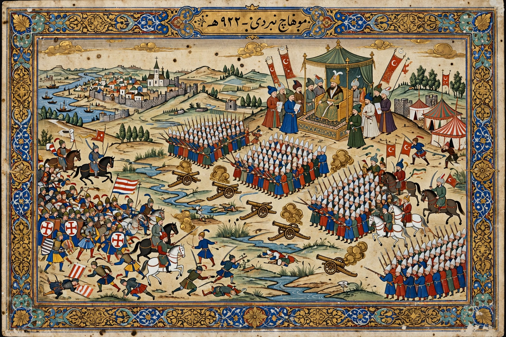

| Battle of Mohács | |
|---|---|
| Date | 29 August 1526 |
| Location | Mohács, Kingdom of Hungary |
| Combatants | Ottoman Empire vs Kingdom of Hungary |
| Commanders | Suleiman the Magnificent; Louis II of Hungary † |
| Result | Decisive Ottoman victory |
The Battle of Mohács, fought on 29 August 1526 near Mohács in southern Hungary, was the crushing defeat of the Kingdom of Hungary by the Ottoman Empire under Sultan Suleiman the Magnificent. King Louis II of Hungary died on the field, and the battle destroyed the medieval Hungarian kingdom, opening central Europe to a century and a half of Ottoman rule.

Louis II fielded perhaps 25,000–30,000 men with some 80 guns against an Ottoman army roughly twice as large, amply supplied with janissaries and artillery. In the afternoon the Hungarian heavy cavalry charged and initially drove back the Ottoman first line — into the prepared position of the janissaries and massed guns, whose volleys shattered the charge. The Hungarian army collapsed within about two hours. Some 14,000–20,000 Hungarians died, including the king — who drowned fleeing across a marshy stream — seven bishops, and much of the nobility.
Suleiman entered an undefended Buda. Hungary split three ways: a central zone under direct Ottoman rule, a western strip ("Royal Hungary") under the Habsburg Ferdinand I, and a Transylvanian principality under Ottoman suzerainty. The catastrophe remains a defining national trauma in Hungary; the saying "More was lost at Mohács" (Több is veszett Mohácsnál) is still proverbial.
Suleiman the Magnificent · Battle of Vienna · Ottoman Empire · Louis II of Hungary